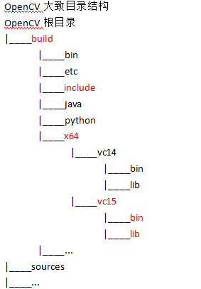
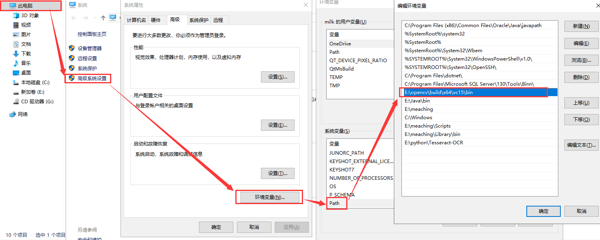
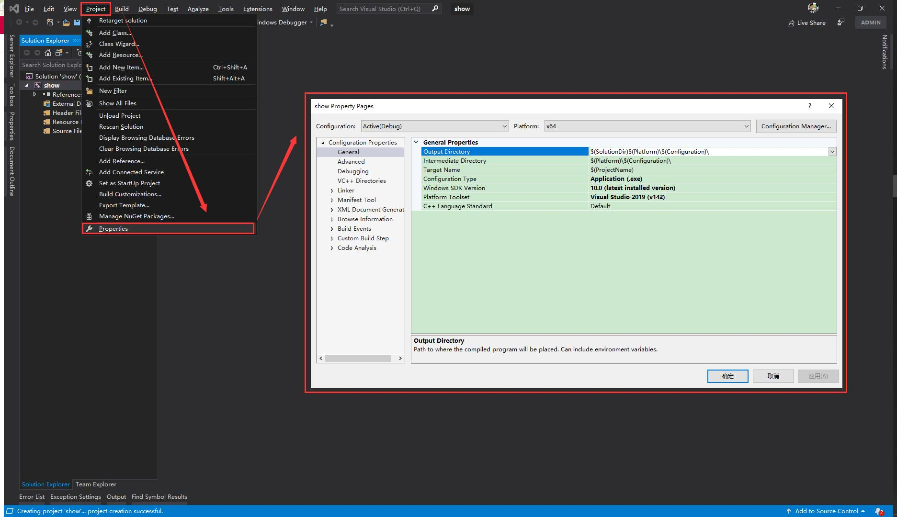
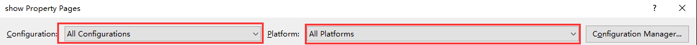
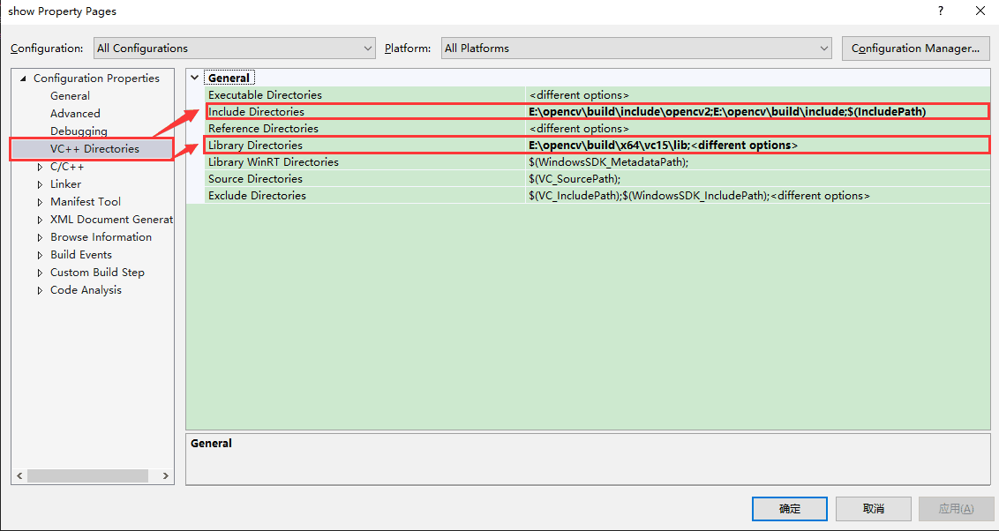
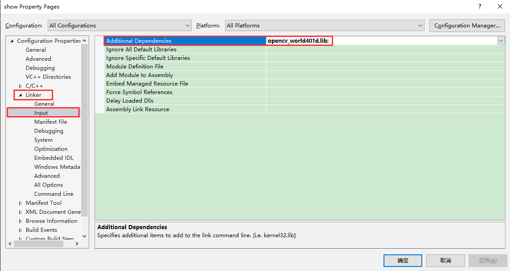
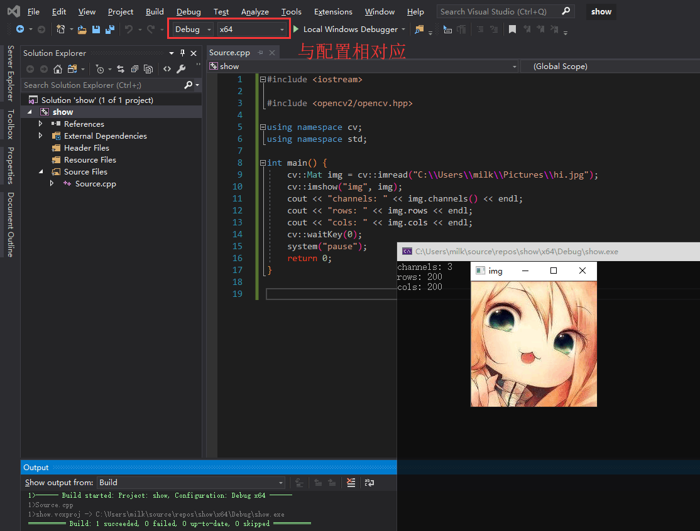

Visual Studio 配置OpenCV开发环境
- categories
- >
- OpenCV
写在前面
随着 OpenCV 的版本更新，使用 Visual Studio 配置 OpenCV 说不上复杂，但是由于 PC 环境差异问题，可能有各种各样的错误。
仅供参考。
环境
OpenCV 版本: 4.0.1
操作系统: Windows 10
IDE: Visual Studio 2019
开始
OpenCV 大致目录结构

红色表示接下来要使用的
关于 vc14 和 vc15 的个人看法: 两者兼容 Visual Studio 版本不同，vc15 兼容较新的版本，vc14 兼容较老的版本
添加环境变量
添加的环境变量: 你的OpenCV安装目录/build/x64/vc15/bin
我的 OpenCV 安装目录: E:/opencv/

创建一个项目
不必多说
我创建的项目名称为 show
开启属性配置
开启方式：

目录配置
注意！！！
项目有 Release 和 Debug 之分，平台有 32 位和 64 位之分。
但是我发现 OpenCV 4.x.x 版本只提供了 x64 也就是 64 位。如果选择 32 位进行编译将会报错(平台不支持)。

头文件目录和链接库目录添加：

Include:
- 你的 OpenCV 安装目录/build/include
- 你的 OpenCV 安装目录/build/include/opencv
Linker:
- 你的 OpenCV 安装目录/build/x64/vc15/lib

注意！！！
这里链接库有两个选择:
- opencv_world401.lib: 适用于 Release 模式
- opencvworld401d.lib: 适用于 Debug 模式，d 为 Debug 之意
两者只能选择其中一个。
_401 表示 OpenCV 版本 4.0.1
hello world

稍微注意一下编译模式和平台选项即可
总结
真实情况错综复杂，仅供参考。
comment:
- Valine
- LiveRe
- ChangYan